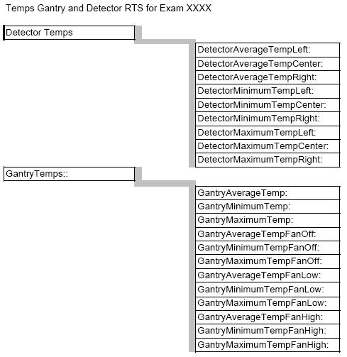

Operating Documentation
Direction 5181178-800, Rev# 16
BrightSpeed Select Service Methods Gen
Module Version 1.0, Version Date 2/16/07
Operating Documentation |
This document defines the available Real Time Statistics (RTS) data available on the system for the Gantry and Detector Temperature sensors. The RTS data is sent by the DCB to the host for the Detector temperatures and via the TGP for the gantry temperatures at the end of each exam.
The RTS viewer for the Gantry and Detector temperatures shows a listing of average, minimum and maximum temperatures seen during a specific exam. See Illustration 1 for a pictorial view of the data to help in understanding the information seen. The information is grouped into 2 areas for the listed exam.
Detector Temps
Gantry Temps
Illustration 1: Pictorial view: Temperatures Gantry and Detector

Below is a sample of the data seen with explanations and ranges defining normal operation.
Table 1: RTS data
| RTS (Real Time Statistics) Name | Data Example | Unit | Range | Explanation |
| Date: Wed Apr 7 08:12:50 2004 | date/time stamp for the exam | |||
| ENDEXAM: ID 801 | exam number associated with this data | |||
| DetectorTemps:: | temps measured during the stated exam | |||
| DetectorAverageTempLeft: | 35.860001 | degrees C | 35.7 - 36.3 | average temperature of the left detector zone |
| DetectorAverageTempCenter: | 35.910000 | degrees C | 35.7 - 36.3 | average temperature of the center detector zone |
| DetectorAverageTempRight: | 35.910000 | degrees C | 35.7 - 36.3 | average temperature of the right detector zone |
| DetectorMinimumTempLeft: | 35.860001 | degrees C | 35.7 - 36.3 | Minimum temperature of the left detector zone |
| DetectorMinimumTempCenter: | 35.910000 | degrees C | 35.7 - 36.3 | Minimum temperature of the center detector zone |
| DetectorMinimumTempRight: | 35.910000 | degrees C | 35.7 - 36.3 | Minimum temperature of the right detector zone |
| DetectorMaximumTempLeft: | 36.240002 | degrees C | 35.7 - 36.3 | Maximum temperature of the left detector zone |
| DetectorMaximumTempCenter: | 36.110001 | degrees C | 35.7 - 36.3 | Maximum temperature of the center detector zone |
| DetectorMaximumTempRight: | 36.200000 | degrees C | 35.7 - 36.3 | Maximum temperature of the right detector zone |
| GantryTemps:: | ||||
| GantryAverageTemp: | 23.889999 | degrees C | Average temperature seen by the gantry temp sensor, should not see anything higher than 43-46 degrees C during normal use. | |
| GantryMinimumTemp: | 23.809999 | degrees C | Minimum temperature seen by the gantry temp sensor | |
| GantryMaximumTemp: | 28.150000 | degrees C | Maximum temperature seen by the gantry temp sensor | |
| GantryAverageTempFanOff: | 26.150000 | degrees C | Average temperature seen by the gantry temp sensor while the fans were off. | |
| GantryMinimumTempFanOff: | 26.000000 | degrees C | Minimum temperature seen by the gantry temp sensor while the fans were off. | |
| GantryMaximumTempFanOff: | 28.139999 | degrees C | Maximum temperature seen by the gantry temp sensor while the fans were off. | |
| GantryAverageTempFanLow: | 26.120001 | degrees C | Average temperature seen by the gantry temp sensor while the fans were at low speed | |
| GantryMinimumTempFanLow: | 26.040001 | degrees C | Minimum temperature seen by the gantry temp sensor while the fans were at low speed | |
| GantryMaximumTempFanLow: | 28.150000 | degrees C | Maximum temperature seen by the gantry temp sensor while the fans were at low speed | |
| GantryAverageTempFanHigh: | 23.889999 | degrees C | Average temperature seen by the gantry temp sensor while the fans were at high speed | |
| GantryMinimumTempFanHigh: | 23.809999 | degrees C | Minimum temperature seen by the gantry temp sensor while the fans were at high speed | |
| GantryMaximumTempFanHigh: | 26.660000 | degrees C | Maximum temperature seen by the gantry temp sensor while the fans were at high speed |